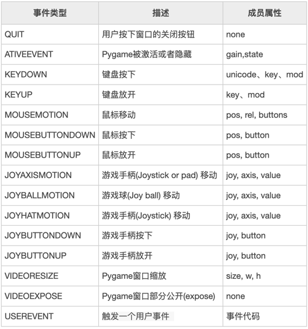

游戏设计
Contents
游戏设计#
Pygame是一个专门用来开发游戏的 Python 模块，主要为开发、设计2D电子游戏而生，它是一个免费、开源的第三方软件包，支持多种操作系统，具有良好的跨平台性（比如 Windows、Linux、Mac 等）。
帧（frame)#
游戏的核心是循环（game loop)。这个循环不断运行，一遍又一遍的地完成所有让游戏运行所需的操作。游戏的一次循环称为一帧。
在每一帧中可能发生很多事情，但它们可以分为三个不同类别：
处理输入（或事件） 这些是游戏对用户行为做出的响应，可能是键盘按键、鼠标点击等。
更新游戏 这是在每一帧里修改的所有内容。如果物体在空中，它的位置、速度会被重力影响；如果两个物体相撞，它们会爆炸。
渲染（或者绘制） 我们需要在屏幕上绘制所有内容，包括背景、角色、菜单或玩家需要看到的任何其他内容。
时钟#
游戏循环的一个重要方面是控制循环的运行速度。在游戏中，我们将循环的速度称作FPS(Frame Per Second)，也就是每秒帧数。FPS表示每一秒钟的循环次数。
FPS指标对游戏很重要，因为游戏运行太快或者太慢都不是一件好事。
事件#
每当玩家与你的游戏交互——点击按钮，拉出菜单，或者按下按键、滑动鼠标——操作系统就会生成一个事件。Pygame 定义了一个专门用来处理事件的结构，即事件队列，该结构遵循遵循队列“先到先处理”的基本原则，通过事件队列，我们可以有序的、逐一地处理用户的操作（触发事件）。下述表格列出了 Pygame 中常用的游戏事件：

pygame.event.get(): 返回当前全部事件
for event in pygame.event.get(): 遍历全部事件
event.type: 事件类型
开始构建一个PyGame模版#
现在我们知道了游戏的一些关键信息，我们可以开始编写一个最简单的游戏。这个游戏只包含一个游戏窗口。
首先声明游戏变量WIDTH和HEIGHT，代表游戏窗口的大小。
import pygame
WIDTH = 400 # 游戏窗口的宽度
HEIGHT = 400 # 游戏窗口的高度
FPS = 30 # 每秒帧数
接下来初始化游戏窗口:
# 初始化pygame并创建窗口
pygame.init()
screen = pygame.display.set_mode((WIDTH, HEIGHT))
pygame.display.set_caption("My Game")
clock = pygame.time.Clock()
游戏循环：每一轮循环都要经历响应事件 -> 更新游戏状态 -> 渲染屏幕三个过程。
while running:
clock.tick(FPS)
for event in pygame.event.get():
if event.type == pygame.QUIT:
running = False
screen.fill((255, 255, 255))
pygame.display.flip()
pygame.quit()
Ex1：创建400x400的白色窗口
https://replit.com/@scls-cs/Game0
import pygame
pygame.init()
width = 400
height = 400
screen = pygame.display.set_mode((width, height))
pygame.display.set_caption("window title")
clock = pygame.time.Clock()
FPS = 30
running = True
while running:
clock.tick(FPS)
for event in pygame.event.get():
if event.type == pygame.QUIT:
running = False
screen.fill((255, 255, 255))
pygame.display.flip()
Ex2：按下鼠标使窗口闪烁
https://replit.com/@scls-cs/Game1
import pygame
pygame.init()
width = 400
height = 400
screen = pygame.display.set_mode((width, height))
pygame.display.set_caption("window title")
clock = pygame.time.Clock()
FPS = 30
count = 0
running = True
while running:
clock.tick(FPS)
for event in pygame.event.get():
if event.type == pygame.QUIT:
running = False
if event.type == pygame.MOUSEBUTTONDOWN:
count += 1
if(count%2 == 0):
screen.fill((255, 255, 255))
else:
screen.fill((0, 0, 0))
pygame.display.flip()
Ex3：通过移动鼠标改变屏幕颜色
https://replit.com/@scls-cs/Game2
import pygame
pygame.init()
width = 200
height = 200
screen = pygame.display.set_mode((width, height))
pygame.display.set_caption("window title")
clock = pygame.time.Clock()
FPS = 30
running = True
while running:
clock.tick(FPS)
for event in pygame.event.get():
if event.type == pygame.QUIT:
running = False
if event.type == pygame.MOUSEMOTION:
x,y = pygame.mouse.get_pos() #返回鼠标的坐标(x,y)
screen.fill((x, y, 255))
pygame.display.flip()